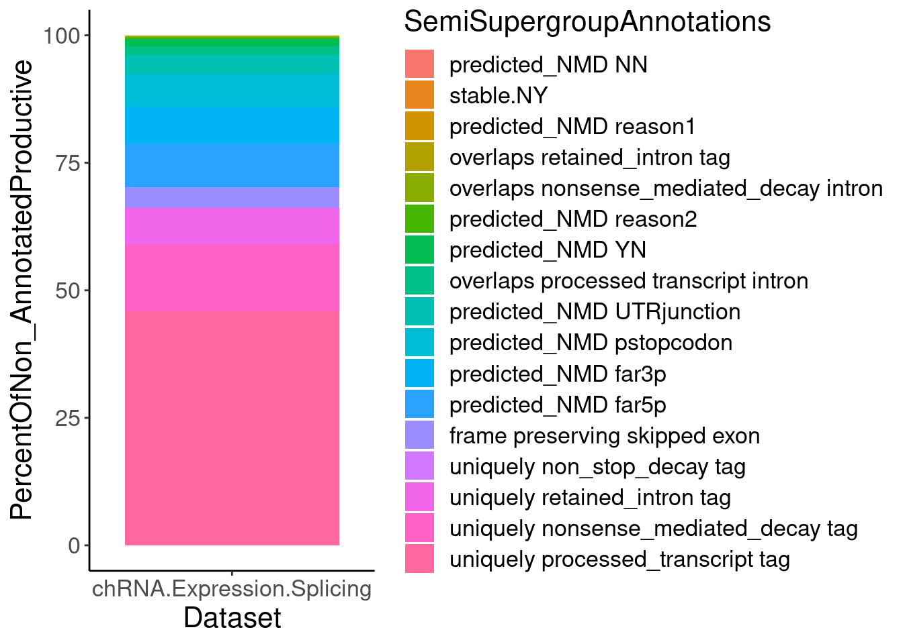

MakeFinalFigs_Fig2
2023-05-18
Last updated: 2023-05-29
Checks: 6 1
Knit directory:
ChromatinSplicingQTLs/analysis/
This reproducible R Markdown analysis was created with workflowr (version 1.7.0). The Checks tab describes the reproducibility checks that were applied when the results were created. The Past versions tab lists the development history.
The R Markdown file has unstaged changes. To know which version of
the R Markdown file created these results, you’ll want to first commit
it to the Git repo. If you’re still working on the analysis, you can
ignore this warning. When you’re finished, you can run
wflow_publish to commit the R Markdown file and build the
HTML.
Great job! The global environment was empty. Objects defined in the global environment can affect the analysis in your R Markdown file in unknown ways. For reproduciblity it’s best to always run the code in an empty environment.
The command set.seed(20191126) was run prior to running
the code in the R Markdown file. Setting a seed ensures that any results
that rely on randomness, e.g. subsampling or permutations, are
reproducible.
Great job! Recording the operating system, R version, and package versions is critical for reproducibility.
Nice! There were no cached chunks for this analysis, so you can be confident that you successfully produced the results during this run.
Great job! Using relative paths to the files within your workflowr project makes it easier to run your code on other machines.
Great! You are using Git for version control. Tracking code development and connecting the code version to the results is critical for reproducibility.
The results in this page were generated with repository version d49ae42. See the Past versions tab to see a history of the changes made to the R Markdown and HTML files.
Note that you need to be careful to ensure that all relevant files for
the analysis have been committed to Git prior to generating the results
(you can use wflow_publish or
wflow_git_commit). workflowr only checks the R Markdown
file, but you know if there are other scripts or data files that it
depends on. Below is the status of the Git repository when the results
were generated:
Ignored files:
Ignored: .DS_Store
Ignored: .Rhistory
Ignored: .Rproj.user/
Ignored: analysis/.Rhistory
Ignored: code/.DS_Store
Ignored: code/.RData
Ignored: code/._report.html
Ignored: code/.ipynb_checkpoints/
Ignored: code/.snakemake/
Ignored: code/APA_Processing/
Ignored: code/Alignments/
Ignored: code/ChromHMM/
Ignored: code/ENCODE/
Ignored: code/ExpressionAnalysis/
Ignored: code/ExtractPhenotypeBedByGenotype.py
Ignored: code/FastqFastp/
Ignored: code/FastqFastpSE/
Ignored: code/FastqSE/
Ignored: code/FineMapping/
Ignored: code/Genotypes/
Ignored: code/H3K36me3_CutAndTag.pdf
Ignored: code/IntronSlopes/
Ignored: code/LR.bed
Ignored: code/LR.seq.bed
Ignored: code/LongReads/
Ignored: code/Metaplots/
Ignored: code/Misc/
Ignored: code/MiscCountTables/
Ignored: code/Multiqc/
Ignored: code/Multiqc_chRNA/
Ignored: code/NonCodingRNA/
Ignored: code/NonCodingRNA_annotation/
Ignored: code/PairwisePi1Traits.P.all.txt.gz
Ignored: code/PeakCalling/
Ignored: code/Phenotypes/
Ignored: code/PlotGruberQTLs/
Ignored: code/PlotQTLs/
Ignored: code/ProCapAnalysis/
Ignored: code/QC/
Ignored: code/QTL_SNP_Enrichment/
Ignored: code/QTLs/
Ignored: code/RPKM_tables/
Ignored: code/ReadLengthMapExperiment/
Ignored: code/ReadLengthMapExperimentResults/
Ignored: code/ReadLengthMapExperimentSpliceCounts/
Ignored: code/ReferenceGenome/
Ignored: code/Rplots.pdf
Ignored: code/Session.vim
Ignored: code/SmallMolecule/
Ignored: code/SplicingAnalysis/
Ignored: code/TODO
Ignored: code/Tehranchi/
Ignored: code/alias/
Ignored: code/bigwigs/
Ignored: code/bigwigs_FromNonWASPFilteredReads/
Ignored: code/config/.DS_Store
Ignored: code/config/._.DS_Store
Ignored: code/config/.ipynb_checkpoints/
Ignored: code/config/config.local.yaml
Ignored: code/dag.pdf
Ignored: code/dag.png
Ignored: code/dag.svg
Ignored: code/data/
Ignored: code/debug.ipynb
Ignored: code/debug_python.ipynb
Ignored: code/deepTools/
Ignored: code/featureCounts/
Ignored: code/featureCountsBasicGtf/
Ignored: code/genome_config.yaml
Ignored: code/gwas_summary_stats/
Ignored: code/hyprcoloc/
Ignored: code/igv_session.xml
Ignored: code/isoseqbams/
Ignored: code/log
Ignored: code/logs/
Ignored: code/notebooks/.ipynb_checkpoints/
Ignored: code/pi1/
Ignored: code/polyA.Splicing.Subset_YRI.NominalPassForColoc.bed.bgz
Ignored: code/rules/.ipynb_checkpoints/
Ignored: code/rules/OldRules/
Ignored: code/rules/notebooks/
Ignored: code/salmontest/
Ignored: code/scratch/
Ignored: code/scripts/.Plot_mbv.R.swp
Ignored: code/scripts/.ipynb_checkpoints/
Ignored: code/scripts/GTFtools_0.8.0/
Ignored: code/scripts/__pycache__/
Ignored: code/scripts/liftOverBedpe/liftOverBedpe.py
Ignored: code/snakemake.dryrun.log
Ignored: code/snakemake.log
Ignored: code/snakemake.sbatch.log
Ignored: code/snakemake_profiles/slurm/__pycache__/
Ignored: code/test.introns.bed
Ignored: code/test.introns2.bed
Ignored: code/test.log
Ignored: code/tracks.xml
Ignored: data/.DS_Store
Ignored: data/GWAS_catalog_summary_stats_sources/._list_gwas_summary_statistics_6_Apr_2022-10.csv
Ignored: data/GWAS_catalog_summary_stats_sources/._list_gwas_summary_statistics_6_Apr_2022-11.csv
Ignored: data/GWAS_catalog_summary_stats_sources/._list_gwas_summary_statistics_6_Apr_2022-2.csv
Ignored: data/GWAS_catalog_summary_stats_sources/._list_gwas_summary_statistics_6_Apr_2022-3.csv
Ignored: data/GWAS_catalog_summary_stats_sources/._list_gwas_summary_statistics_6_Apr_2022-4.csv
Ignored: data/GWAS_catalog_summary_stats_sources/._list_gwas_summary_statistics_6_Apr_2022-5.csv
Ignored: data/GWAS_catalog_summary_stats_sources/._list_gwas_summary_statistics_6_Apr_2022-6.csv
Ignored: data/GWAS_catalog_summary_stats_sources/._list_gwas_summary_statistics_6_Apr_2022-7.csv
Ignored: data/GWAS_catalog_summary_stats_sources/._list_gwas_summary_statistics_6_Apr_2022-8.csv
Ignored: data/GWAS_catalog_summary_stats_sources/._list_gwas_summary_statistics_6_Apr_2022.csv
Ignored: data/Metaplots/.DS_Store
Untracked files:
Untracked: analysis/20230528_IdentifyBrianaPacBio.Rmd
Untracked: code/scripts/Plot_mbv_NoPredictedID.R
Unstaged changes:
Modified: analysis/MakeFinalFigs_Fig2.Rmd
Modified: code/Snakefile
Modified: code/config/ColocRunWildcards.tsv
Modified: code/rules/LongReads.smk
Modified: code/scripts/Plot_mbv.R
Note that any generated files, e.g. HTML, png, CSS, etc., are not included in this status report because it is ok for generated content to have uncommitted changes.
These are the previous versions of the repository in which changes were
made to the R Markdown (analysis/MakeFinalFigs_Fig2.Rmd)
and HTML (docs/MakeFinalFigs_Fig2.html) files. If you’ve
configured a remote Git repository (see ?wflow_git_remote),
click on the hyperlinks in the table below to view the files as they
were in that past version.
| File | Version | Author | Date | Message |
|---|---|---|---|---|
| Rmd | b8b6d6d | Benjmain Fair | 2023-05-24 | add new long table |
| Rmd | 5946b5a | Benjmain Fair | 2023-05-22 | update site |
knitr::opts_chunk$set(echo = TRUE, warning = F, message = F)
library(tidyverse)── Attaching packages ─────────────────────────────────────── tidyverse 1.3.1 ──✔ ggplot2 3.3.6 ✔ purrr 0.3.4
✔ tibble 3.1.7 ✔ dplyr 1.0.9
✔ tidyr 1.2.0 ✔ stringr 1.4.0
✔ readr 2.1.2 ✔ forcats 0.5.1── Conflicts ────────────────────────────────────────── tidyverse_conflicts() ──
✖ dplyr::filter() masks stats::filter()
✖ dplyr::lag() masks stats::lag()library(RColorBrewer)
library(data.table)
Attaching package: 'data.table'The following objects are masked from 'package:dplyr':
between, first, lastThe following object is masked from 'package:purrr':
transposelibrary(readxl)
library(qvalue)
library(ggrepel)
library(knitr)
library(ggbreak)ggbreak v0.1.1
If you use ggbreak in published research, please cite the following
paper:
S Xu, M Chen, T Feng, L Zhan, L Zhou, G Yu. Use ggbreak to effectively
utilize plotting space to deal with large datasets and outliers.
Frontiers in Genetics. 2021, 12:774846. doi: 10.3389/fgene.2021.774846# Set theme
theme_set(
theme_classic() +
theme(text=element_text(size=16, family="Helvetica")))
# I use layer a lot, to rotate long x-axis labels
Rotate_x_labels <- theme(axis.text.x = element_text(angle = 45, vjust = 1, hjust=1))List
Number QTLs
PhenotypeWildcardsAll <- Sys.glob("../code/QTLs/QTLTools/*/PermutationPass.FDR_Added.txt.gz") %>%
str_replace("../code/QTLs/QTLTools/(.+?)/PermutationPass.FDR_Added.txt.gz", "\\1")
PhenotypeWildcards_ToIncluide <- c("APA_Nuclear", "APA_Total", "Expression.Splicing.Subset_YRI", "Expression.Splicing", "H3K27AC", "H3K36ME3", "H3K4ME3", "H3K4ME1", "MetabolicLabelled.30min", "MetabolicLabelled.60min", "chRNA.Expression.Splicing", "chRNA.Splicing", "polyA.Splicing", "polyA.Splicing.Subset_YRI", "MetabolicLabelled.30min.Splicing", "MetabolicLabelled.60min.Splicing")
GroupedPhenotypeWildcards_ToIncluide <- c( "chRNA.Splicing", "polyA.Splicing.Subset_YRI", "polyA.Splicing", "MetabolicLabelled.30min.Splicing", "MetabolicLabelled.60min.Splicing")
UngroupedPhenotypeWildcards_ToIncluide <- setdiff(PhenotypeWildcards_ToIncluide, GroupedPhenotypeWildcards_ToIncluide)
Grouped.dat <- setNames(paste0("../code/QTLs/QTLTools/",GroupedPhenotypeWildcards_ToIncluide,"/GroupedPermutationPass.FDR_Added.txt.gz"), GroupedPhenotypeWildcards_ToIncluide) %>%
lapply(fread) %>%
bind_rows(.id="PC")
Ungrouped.dat <- setNames(paste0("../code/QTLs/QTLTools/",UngroupedPhenotypeWildcards_ToIncluide,"/PermutationPass.FDR_Added.txt.gz"), UngroupedPhenotypeWildcards_ToIncluide) %>%
lapply(fread) %>%
bind_rows(.id="PC")
Full.dat <- bind_rows(
Grouped.dat, Ungrouped.dat
)First plot number of individuals for each assay
SampleSize <- read_tsv("../code/QC/SampleSize.PerPhenotype.tsv", col_names=c("fn", "dummy", "n")) %>%
mutate(PC = str_replace(fn,"QTLs/QTLTools/(.+?)/OnlyFirstReps.sorted.qqnorm.bed.gz", "\\1")) %>%
filter(PC %in% c("Expression.Splicing", "Expression.Splicing.Subset_YRI", "chRNA.Expression.Splicing", "MetabolicLabelled.30min", "MetabolicLabelled.60min", "H3K27AC", "H3K4ME3", "H3K4ME1", "H3K36ME3", "APA_Nuclear", "APA_Total"))
SampleSize %>%
dplyr::select(PC, n) %>%
kable()| PC | n |
|---|---|
| Expression.Splicing | 462 |
| Expression.Splicing.Subset_YRI | 89 |
| chRNA.Expression.Splicing | 86 |
| MetabolicLabelled.30min | 66 |
| MetabolicLabelled.60min | 66 |
| H3K27AC | 72 |
| H3K4ME3 | 72 |
| H3K4ME1 | 72 |
| H3K36ME3 | 94 |
| APA_Nuclear | 52 |
| APA_Total | 52 |
SourcePublications <- setNames(c("Lappalainen et al", "Lappalainen et al", "This study", "Li et al", "Li et al", "Grubert et al", "Grubert et al", "Grubert et al", "This study", "Mittleman et al", "Mittleman et al"), SampleSize$PC)
Labels = setNames(c("polyA RNA-seq*", "polyA RNA-seq", "chRNA-seq", "30m 4sU RNA-seq", "60m 4sU RNA-seq", "H3K4me1 ChIP-seq", "H3K27Ac ChIP-seq", "H3K4me3 ChIP-seq", "H3K36me3 Cut&Tag", "nuclear RNA 3'seq", "Total RNA 3'seq"), SampleSize$PC)
SampleSizes <- SampleSize %>%
filter(!PC %in% "Expression.Splicing.Subset_YRI") %>%
mutate(publication = recode(PC, !!!SourcePublications)) %>%
mutate(Assay = factor(PC, levels=c("H3K4ME1", "H3K27AC", "H3K4ME3", "H3K36ME3", "chRNA.Expression.Splicing", "APA_Nuclear", "APA_Total", "MetabolicLabelled.30min","MetabolicLabelled.60min", "Expression.Splicing"))) %>%
ggplot(aes(x=Assay, y=n)) +
geom_col() +
# geom_text(aes(label=n), color="black") +
geom_text(aes(label=publication),angle=90, color="black", y=0, hjust=-0.05) +
scale_x_discrete(labels=Labels) +
scale_y_continuous(expand=c(0,0)) +
scale_y_break(c(100,425), scales="fixed", ticklabels=c(425, 450, 475), expand=F, space=0.4) +
Rotate_x_labels +
labs(x="Assay", y="Sample size", caption=str_wrap("*Includes samples non-YRI donors, though some supplementary analyses only utilize the 89 YRI samples in this dataset", 30)) +
theme(axis.text.x=element_text(size=rel(0.5)))
P.SampleSizes <- ggplotify::as.ggplot(print(SampleSizes))
P.SampleSizesNow number of QTLs
relabel.df <- read_tsv("../data/Phenotypes_recode_for_Plotting.txt")
relabel.df %>% head()# A tibble: 6 × 9
PC Alias ShorterAlias ShorterAlias2 Shortest Include Assay Alias_202305
<chr> <chr> <chr> <chr> <chr> <lgl> <chr> <chr>
1 APA_Nucl… APA_… APA_Nuclear APA APA QTL… TRUE Nucl… APA (Nuclea…
2 APA_Total APA_… APA_Total APA APA QTL… TRUE Tota… APA (Total …
3 chRNA.Ex… Expr… ncRNA_chRNA ncRNA_chRNA <NA> TRUE <NA> <NA>
4 chRNA.Ex… Expr… ncRNA_chRNA ncRNA_chRNA <NA> FALSE <NA> <NA>
5 chRNA.Ex… chRN… ncRNA_chRNA ncRNA_chRNA <NA> FALSE <NA> <NA>
6 chRNA.Ex… chRN… ncRNA_chRNA ncRNA_chRNA <NA> FALSE <NA> <NA>
# … with 1 more variable: OrderFactor <dbl>Full.dat$PC %>% unique() [1] "chRNA.Splicing" "polyA.Splicing.Subset_YRI"
[3] "polyA.Splicing" "MetabolicLabelled.30min.Splicing"
[5] "MetabolicLabelled.60min.Splicing" "APA_Nuclear"
[7] "APA_Total" "Expression.Splicing.Subset_YRI"
[9] "Expression.Splicing" "H3K27AC"
[11] "H3K36ME3" "H3K4ME3"
[13] "H3K4ME1" "MetabolicLabelled.30min"
[15] "MetabolicLabelled.60min" "chRNA.Expression.Splicing" MolQTL_Labels <- relabel.df %>% dplyr::select(PC, Shortest) %>% deframe()
MolQTL_AssayLabels <- relabel.df %>% dplyr::select(PC, Assay) %>% deframe()
Factor_Order <- relabel.df %>% dplyr::select(PC, OrderFactor) %>% deframe()
NumQTLs.dat <- Full.dat %>%
filter(PC %in% c("APA_Total", "APA_Nuclear")) %>%
separate(phe_id, into=c("gene", "region", "peak"), sep="_") %>%
arrange(adj_emp_pval) %>%
group_by(gene) %>% slice(1) %>%
bind_rows(
Full.dat %>%
filter(!PC %in% c("APA_Total", "APA_Nuclear"))
) %>%
group_by(PC) %>%
summarise(
FDR_10 = sum(q<0.1, na.rm=T),
FDR_05 = sum(q<0.05, na.rm=T),
FDR_01 = sum(q<0.01, na.rm=T),
TestFeats=n()) %>%
gather("FDR", "n", -PC, -TestFeats) %>%
mutate(PC_relabeled = recode(PC, !!!MolQTL_Labels)) %>%
mutate(Assay_relabeled = recode(PC, !!!MolQTL_AssayLabels)) %>%
mutate(FinalLabels = paste(PC_relabeled, Assay_relabeled, sep="\n")) %>%
mutate(OrderFactor = recode(PC, !!!Factor_Order)) %>%
mutate(FinalLabels = fct_reorder(FinalLabels, OrderFactor))
Num.QTLs <- ggplot(NumQTLs.dat, aes(x=FinalLabels, y=n, fill=FDR)) +
geom_col(position="identity", width=0.8) +
Rotate_x_labels +
scale_y_continuous(trans="log10", breaks=10**(1:5), labels=c(10, 100, "1K", "10K", "100K")) +
# geom_text_repel(
# data = . %>%
# gather("FDR","n",-PC),
# aes(label=n, y=n), angle=90, hjust=-0.05,
# min.segment.length = unit(0, 'lines'),
# color="black") +
geom_text(
data = . %>%
filter(FDR== "FDR_10"),
aes(label=str_glue("{n} / {TestFeats}")), angle=90, hjust=0,
color="black") +
coord_cartesian(ylim=c(100,1E5)) +
scale_fill_manual(values=c("FDR_10"="#ffeda0", "FDR_05"="#feb24c", "FDR_01"="#f03b20"), labels=c("FDR_10"="10%", "FDR_05"="5%", "FDR_01"="1%")) +
# scale_x_discrete(labels=c())
labs(x="molQTL type, assay", y="Number QTLs", fill="FDR", caption=str_wrap("*Each sQTL/APA-QTL count here represents a likely independent genetic effect that may effect multiple introns/APA-sites within a local leafcutter cluster of introns/APA-sites", 40)) +
theme(axis.text.x = element_text(size=9, hjust=1, angle=70))
Num.QTLsNumQTLs.dat %>% kable()| PC | TestFeats | FDR | n | PC_relabeled | Assay_relabeled | FinalLabels | OrderFactor |
|---|---|---|---|---|---|---|---|
| APA_Nuclear | 4941 | FDR_10 | 277 | APA QTLs* | Nuclear RNA 3’seq | APA QTLs* | |
| Nuclear RNA 3’seq | 7.0 | ||||||
| APA_Total | 2997 | FDR_10 | 133 | APA QTLs* | Total RNA 3’seq | APA QTLs* | |
| Total RNA 3’seq | 14.0 | ||||||
| Expression.Splicing | 14000 | FDR_10 | 11966 | Expression; eQTLs | polyA RNA-seq | Expression; eQTLs | |
| polyA RNA-seq | 10.0 | ||||||
| Expression.Splicing.Subset_YRI | 14000 | FDR_10 | 3970 | Expression; eQTLs (YRI only) | polyA RNA-seq | Expression; eQTLs (YRI only) | |
| polyA RNA-seq | 11.0 | ||||||
| H3K27AC | 100858 | FDR_10 | 10222 | H3K27Ac; hQTLs | H3K27Ac ChIP-seq | H3K27Ac; hQTLs | |
| H3K27Ac ChIP-seq | 2.0 | ||||||
| H3K36ME3 | 14000 | FDR_10 | 754 | H3K36me3; hQTLs | H3K36me3 ChIP-seq | H3K36me3; hQTLs | |
| H3K36me3 ChIP-seq | 4.0 | ||||||
| H3K4ME1 | 182749 | FDR_10 | 6328 | H3K4me1; hQTLs | H3K4me1 ChIP-seq | H3K4me1; hQTLs | |
| H3K4me1 ChIP-seq | 1.0 | ||||||
| H3K4ME3 | 55769 | FDR_10 | 4602 | H3K4me3; hQTLs | H3K4me3 ChIP-seq | H3K4me3; hQTLs | |
| H3K4me3 ChIP-seq | 3.0 | ||||||
| MetabolicLabelled.30min | 14000 | FDR_10 | 955 | Expression; eQTLs | 30min 4sU RNA-seq | Expression; eQTLs | |
| 30min 4sU RNA-seq | 8.5 | ||||||
| MetabolicLabelled.30min.Splicing | 35099 | FDR_10 | 390 | Splicing | 30min 4sU RNA-seq | Splicing | |
| 30min 4sU RNA-seq | 8.0 | ||||||
| MetabolicLabelled.60min | 13993 | FDR_10 | 960 | Expression; eQTLs | 60min 4sU RNA-seq | Expression; eQTLs | |
| 60min 4sU RNA-seq | 9.0 | ||||||
| MetabolicLabelled.60min.Splicing | 35648 | FDR_10 | 464 | Splicing | 60min 4sU RNA-seq | Splicing | |
| 60min 4sU RNA-seq | 9.5 | ||||||
| chRNA.Expression.Splicing | 14000 | FDR_10 | 2976 | Expression; eQTLs | chRNA-seq | Expression; eQTLs | |
| chRNA-seq | 5.0 | ||||||
| chRNA.Splicing | 41406 | FDR_10 | 3052 | Splicing; sQTLs* | chRNA-seq | Splicing; sQTLs* | |
| chRNA-seq | 6.0 | ||||||
| polyA.Splicing | 38280 | FDR_10 | 8637 | Splicing; sQTLs* | polyA RNA-seq | Splicing; sQTLs* | |
| polyA RNA-seq | 12.0 | ||||||
| polyA.Splicing.Subset_YRI | 38280 | FDR_10 | 2295 | Splicing; sQTLs* (YRI only) | polyA RNA-seq | Splicing; sQTLs* (YRI only) | |
| polyA RNA-seq | 13.0 | ||||||
| APA_Nuclear | 4941 | FDR_05 | 217 | APA QTLs* | Nuclear RNA 3’seq | APA QTLs* | |
| Nuclear RNA 3’seq | 7.0 | ||||||
| APA_Total | 2997 | FDR_05 | 84 | APA QTLs* | Total RNA 3’seq | APA QTLs* | |
| Total RNA 3’seq | 14.0 | ||||||
| Expression.Splicing | 14000 | FDR_05 | 10403 | Expression; eQTLs | polyA RNA-seq | Expression; eQTLs | |
| polyA RNA-seq | 10.0 | ||||||
| Expression.Splicing.Subset_YRI | 14000 | FDR_05 | 2834 | Expression; eQTLs (YRI only) | polyA RNA-seq | Expression; eQTLs (YRI only) | |
| polyA RNA-seq | 11.0 | ||||||
| H3K27AC | 100858 | FDR_05 | 7380 | H3K27Ac; hQTLs | H3K27Ac ChIP-seq | H3K27Ac; hQTLs | |
| H3K27Ac ChIP-seq | 2.0 | ||||||
| H3K36ME3 | 14000 | FDR_05 | 540 | H3K36me3; hQTLs | H3K36me3 ChIP-seq | H3K36me3; hQTLs | |
| H3K36me3 ChIP-seq | 4.0 | ||||||
| H3K4ME1 | 182749 | FDR_05 | 4383 | H3K4me1; hQTLs | H3K4me1 ChIP-seq | H3K4me1; hQTLs | |
| H3K4me1 ChIP-seq | 1.0 | ||||||
| H3K4ME3 | 55769 | FDR_05 | 3246 | H3K4me3; hQTLs | H3K4me3 ChIP-seq | H3K4me3; hQTLs | |
| H3K4me3 ChIP-seq | 3.0 | ||||||
| MetabolicLabelled.30min | 14000 | FDR_05 | 596 | Expression; eQTLs | 30min 4sU RNA-seq | Expression; eQTLs | |
| 30min 4sU RNA-seq | 8.5 | ||||||
| MetabolicLabelled.30min.Splicing | 35099 | FDR_05 | 274 | Splicing | 30min 4sU RNA-seq | Splicing | |
| 30min 4sU RNA-seq | 8.0 | ||||||
| MetabolicLabelled.60min | 13993 | FDR_05 | 640 | Expression; eQTLs | 60min 4sU RNA-seq | Expression; eQTLs | |
| 60min 4sU RNA-seq | 9.0 | ||||||
| MetabolicLabelled.60min.Splicing | 35648 | FDR_05 | 362 | Splicing | 60min 4sU RNA-seq | Splicing | |
| 60min 4sU RNA-seq | 9.5 | ||||||
| chRNA.Expression.Splicing | 14000 | FDR_05 | 2039 | Expression; eQTLs | chRNA-seq | Expression; eQTLs | |
| chRNA-seq | 5.0 | ||||||
| chRNA.Splicing | 41406 | FDR_05 | 2345 | Splicing; sQTLs* | chRNA-seq | Splicing; sQTLs* | |
| chRNA-seq | 6.0 | ||||||
| polyA.Splicing | 38280 | FDR_05 | 7344 | Splicing; sQTLs* | polyA RNA-seq | Splicing; sQTLs* | |
| polyA RNA-seq | 12.0 | ||||||
| polyA.Splicing.Subset_YRI | 38280 | FDR_05 | 1766 | Splicing; sQTLs* (YRI only) | polyA RNA-seq | Splicing; sQTLs* (YRI only) | |
| polyA RNA-seq | 13.0 | ||||||
| APA_Nuclear | 4941 | FDR_01 | 114 | APA QTLs* | Nuclear RNA 3’seq | APA QTLs* | |
| Nuclear RNA 3’seq | 7.0 | ||||||
| APA_Total | 2997 | FDR_01 | 32 | APA QTLs* | Total RNA 3’seq | APA QTLs* | |
| Total RNA 3’seq | 14.0 | ||||||
| Expression.Splicing | 14000 | FDR_01 | 8172 | Expression; eQTLs | polyA RNA-seq | Expression; eQTLs | |
| polyA RNA-seq | 10.0 | ||||||
| Expression.Splicing.Subset_YRI | 14000 | FDR_01 | 1581 | Expression; eQTLs (YRI only) | polyA RNA-seq | Expression; eQTLs (YRI only) | |
| polyA RNA-seq | 11.0 | ||||||
| H3K27AC | 100858 | FDR_01 | 4394 | H3K27Ac; hQTLs | H3K27Ac ChIP-seq | H3K27Ac; hQTLs | |
| H3K27Ac ChIP-seq | 2.0 | ||||||
| H3K36ME3 | 14000 | FDR_01 | 292 | H3K36me3; hQTLs | H3K36me3 ChIP-seq | H3K36me3; hQTLs | |
| H3K36me3 ChIP-seq | 4.0 | ||||||
| H3K4ME1 | 182749 | FDR_01 | 2422 | H3K4me1; hQTLs | H3K4me1 ChIP-seq | H3K4me1; hQTLs | |
| H3K4me1 ChIP-seq | 1.0 | ||||||
| H3K4ME3 | 55769 | FDR_01 | 1903 | H3K4me3; hQTLs | H3K4me3 ChIP-seq | H3K4me3; hQTLs | |
| H3K4me3 ChIP-seq | 3.0 | ||||||
| MetabolicLabelled.30min | 14000 | FDR_01 | 285 | Expression; eQTLs | 30min 4sU RNA-seq | Expression; eQTLs | |
| 30min 4sU RNA-seq | 8.5 | ||||||
| MetabolicLabelled.30min.Splicing | 35099 | FDR_01 | 160 | Splicing | 30min 4sU RNA-seq | Splicing | |
| 30min 4sU RNA-seq | 8.0 | ||||||
| MetabolicLabelled.60min | 13993 | FDR_01 | 302 | Expression; eQTLs | 60min 4sU RNA-seq | Expression; eQTLs | |
| 60min 4sU RNA-seq | 9.0 | ||||||
| MetabolicLabelled.60min.Splicing | 35648 | FDR_01 | 217 | Splicing | 60min 4sU RNA-seq | Splicing | |
| 60min 4sU RNA-seq | 9.5 | ||||||
| chRNA.Expression.Splicing | 14000 | FDR_01 | 1162 | Expression; eQTLs | chRNA-seq | Expression; eQTLs | |
| chRNA-seq | 5.0 | ||||||
| chRNA.Splicing | 41406 | FDR_01 | 1661 | Splicing; sQTLs* | chRNA-seq | Splicing; sQTLs* | |
| chRNA-seq | 6.0 | ||||||
| polyA.Splicing | 38280 | FDR_01 | 5684 | Splicing; sQTLs* | polyA RNA-seq | Splicing; sQTLs* | |
| polyA RNA-seq | 12.0 | ||||||
| polyA.Splicing.Subset_YRI | 38280 | FDR_01 | 1178 | Splicing; sQTLs* (YRI only) | polyA RNA-seq | Splicing; sQTLs* (YRI only) | |
| polyA RNA-seq | 13.0 |
NumQTLs.dat %>%
filter(FDR=="FDR_10") %>%
pull(n) %>% sum()[1] 57981NumQTLs.dat %>%
filter(FDR=="FDR_10") %>%
pull(TestFeats) %>% sum()[1] 620020Box plots for TTC3
first do some quick data searching to figure out exactly the names of the phenotypes I want to make boxpltos for…
dat <- fread("../code/pi1/PairwisePi1Traits.P.all.txt.gz")
PeaksToTSS <- Sys.glob("../code/Misc/PeaksClosestToTSS/*_assigned.tsv.gz") %>%
setNames(str_replace(., "../code/Misc/PeaksClosestToTSS/(.+?)_assigned.tsv.gz", "\\1")) %>%
lapply(read_tsv) %>%
bind_rows(.id="ChromatinMark") %>%
mutate(GenePeakPair = paste(gene, peak, sep = ";")) %>%
distinct(ChromatinMark, peak, gene, .keep_all=T)
PeaksToTSS %>%
filter(ChromatinMark == "H3K4ME3") %>%
filter(str_detect(gene, "ENSG00000075234"))
dat %>%
filter(PC1 == "Expression.Splicing") %>%
filter(str_detect(P1, "ENSG00000075234")) %>%
# pull(PC2) %>% unique()
filter(PC2 == "polyA.Splicing")
dat %>%
filter(PC1 == "Expression.Splicing") %>%
filter(str_detect(P1, "ENSG00000075234")) %>%
filter(P2 %in% c("H3K4ME3_peak_31179", "22:46292328:46292791:clu_48515_+"))So I’m looking to make boxplots for H3K4ME3_peak_31179 (hQTL), ENSG00000075234.17 (polyA eQTL), and chRNA sQTL and polyA sQTL for 22:46292328:46292791:clu_48515_+
TopSNP: “22:46291323:G:A”
Now use my helper script to get genotype/phenotype data for the top eSNP for those traits..
cd ../code/scripts/GenometracksByGenotype
python ExtractPhenotypeBedByGenotype.py --Bed ../../QTLs/QTLTools/Expression.Splicing/OnlyFirstReps.sorted.qqnorm.bed.gz --VCF ../../Genotypes/1KG_GRCh38/Autosomes.vcf.gz --FeatureName ENSG00000075234.17 --SnpPos chr22:46291323 > ../../scratch/Boxplot.dat.eQTL.tsv
python ExtractPhenotypeBedByGenotype.py --Bed ../../QTLs/QTLTools/polyA.Splicing/OnlyFirstReps.sorted.qqnorm.bed.gz --VCF ../../Genotypes/1KG_GRCh38/Autosomes.vcf.gz --FeatureName 22:46292328:46292791:clu_48515_+ --SnpPos chr22:46291323 > ../../scratch/Boxplot.dat.polyAsQTL.tsv
python ExtractPhenotypeBedByGenotype.py --Bed ../../QTLs/QTLTools/polyA.Splicing/OnlyFirstReps.sorted.qqnorm.bed.gz --VCF ../../Genotypes/1KG_GRCh38/Autosomes.vcf.gz --FeatureName 22:46292328:46292791:clu_48515_+ --SnpPos chr22:46291323 > ../../scratch/Boxplot.dat.polyAsQTL.tsv
python ExtractPhenotypeBedByGenotype.py --Bed ../../QTLs/QTLTools/H3K4ME3/OnlyFirstReps.sorted.qqnorm.bed.gz --VCF ../../Genotypes/1KG_GRCh38/Autosomes.vcf.gz --FeatureName H3K4ME3_peak_31179 --SnpPos chr22:46291323 > ../../scratch/Boxplot.dat.PromoterhQTL.tsvNow let’s read in that data and do boxplots…
dat.for.boxplots <- Sys.glob("../code/scratch/Boxplot.dat.*.tsv") %>%
setNames(str_replace(., "../code/scratch/Boxplot.dat.(.+?).tsv", "\\1")) %>%
lapply(read_tsv, col_names=c("SampleID", "P", "genotype", "Ref", "Alt", "ID"), skip=1) %>%
bind_rows(.id="PC")
dat.for.boxplots %>%
filter(!genotype==3) %>%
mutate(genotype= factor(genotype, levels=c(0,1,2))) %>%
ggplot(aes(x=genotype, y=P, group=genotype)) +
geom_boxplot(outlier.shape = NA, aes(color=genotype)) +
# geom_jitter(width=0.25, alpha=0.1) +
geom_smooth(method='lm', aes(group=1), se=F, color="gray") +
scale_x_discrete(labels=c("0"="GG", "1"="GA", "2"="AA")) +
scale_color_manual(values=c("0"="#f03b20", "1"="#7a0177", "2"="#08519c")) +
# scale_x_discrete() +
facet_wrap(~PC) +
theme(legend.position="none") +
labs(x=NULL, color=NULL)dat.for.boxplots$PC %>% unique()
dat.for.boxplots %>%
filter(!genotype==3) %>%
filter(PC=="PromoterhQTL") %>%
mutate(genotype= factor(genotype, levels=c(0,1,2))) %>%
ggplot(aes(x=genotype, y=P, group=genotype)) +
geom_boxplot(outlier.shape = NA, aes(color=genotype)) +
# geom_jitter(width=0.25, alpha=0.1) +
geom_smooth(method='lm', aes(group=1), se=F, color="gray") +
scale_x_discrete(labels=c("0"="GG", "1"="GA", "2"="AA")) +
scale_color_manual(values=c("0"="#f03b20", "1"="#7a0177", "2"="#08519c")) +
geom_text(x=-Inf, y=Inf, label=" beta=0.15\n P=0.48", hjust=0, vjust=1, size=5.5) +
# scale_x_discrete() +
theme(legend.position="none") +
Rotate_x_labels +
labs(x=NULL, color=NULL, y="H3K4me3 @ promoter")
ggsave("/project2/yangili1/carlos_and_ben_shared/rough_figs/OriginalSubplots/2023_FinalFig2_ExampleBoxplot_hQTL.pdf", height=3, width=2)
dat.for.boxplots %>%
filter(!genotype==3) %>%
filter(PC=="eQTL") %>%
mutate(genotype= factor(genotype, levels=c(0,1,2))) %>%
ggplot(aes(x=genotype, y=P, group=genotype)) +
geom_boxplot(outlier.shape = NA, aes(color=genotype)) +
# geom_jitter(width=0.25, alpha=0.1) +
geom_smooth(method='lm', aes(group=1), se=F, color="gray") +
scale_x_discrete(labels=c("0"="GG", "1"="GA", "2"="AA")) +
scale_color_manual(values=c("0"="#f03b20", "1"="#7a0177", "2"="#08519c")) +
geom_text(x=-Inf, y=Inf, label=" beta=1.1\n P<5E-43", hjust=0, vjust=1, size=5.5) +
# scale_x_discrete() +
theme(legend.position="none") +
Rotate_x_labels +
labs(x=NULL, color=NULL, y="TTC38 expression")
ggsave("/project2/yangili1/carlos_and_ben_shared/rough_figs/OriginalSubplots/2023_FinalFig2_ExampleBoxplot_eQTL.pdf", height=3, width=2)
dat.for.boxplots %>%
filter(!genotype==3) %>%
filter(PC=="polyAsQTL") %>%
mutate(genotype= factor(genotype, levels=c(0,1,2))) %>%
ggplot(aes(x=genotype, y=P, group=genotype)) +
geom_boxplot(outlier.shape = NA, aes(color=genotype)) +
# geom_jitter(width=0.25, alpha=0.1) +
geom_smooth(method='lm', aes(group=1), se=F, color="gray") +
scale_x_discrete(labels=c("0"="GG", "1"="GA", "2"="AA")) +
scale_color_manual(values=c("0"="#f03b20", "1"="#7a0177", "2"="#08519c")) +
geom_text(x=-Inf, y=Inf, label=" beta=-1.1\n P<3e-24", hjust=0, vjust=1, size=5.5) +
# scale_x_discrete() +
theme(legend.position="none") +
Rotate_x_labels +
labs(x=NULL, color=NULL, y="Splicing of cassette exon")
ggsave("/project2/yangili1/carlos_and_ben_shared/rough_figs/OriginalSubplots/2023_FinalFig2_ExampleBoxplot_polyAsQTL.pdf", height=3, width=2)
dat.for.boxplots %>%
filter(!genotype==3) %>%
filter(PC=="chRNAsQTL") %>%
mutate(genotype= factor(genotype, levels=c(0,1,2))) %>%
ggplot(aes(x=genotype, y=P, group=genotype)) +
geom_boxplot(outlier.shape = NA, aes(color=genotype)) +
# geom_jitter(width=0.25, alpha=0.1) +
geom_smooth(method='lm', aes(group=1), se=F, color="gray") +
scale_x_discrete(labels=c("0"="GG", "1"="GA", "2"="AA")) +
scale_color_manual(values=c("0"="#f03b20", "1"="#7a0177", "2"="#08519c")) +
geom_text(x=-Inf, y=Inf, label=" beta=-1.3\n P<4e-19", hjust=0, vjust=1, size=5.5) +
# scale_x_discrete() +
theme(legend.position="none") +
Rotate_x_labels +
labs(x=NULL, color=NULL, y="Splicing of cassette exon")
ggsave("/project2/yangili1/carlos_and_ben_shared/rough_figs/OriginalSubplots/2023_FinalFig2_ExampleBoxplot_chRNAsQTL.pdf", height=3, width=2)Classification of unannotated and unproductive juncs
Actually a supplement related to fig1
juncs.long <- fread("../code/SplicingAnalysis/CombinedJuncTables/YRI.tsv.gz")
IntronAnnotations <- read_tsv("../data/IntronAnnotationsFromYang.tsv.gz") %>%
mutate(stop = end-1)
juncs.long.summary <- juncs.long %>%
dplyr::select(chrom, start, stop, strand, Dataset, Count) %>%
inner_join(IntronAnnotations) %>%
group_by(Dataset, SemiSupergroupAnnotations, SuperAnnotation) %>%
summarise(Sum=sum(Count))
P.PercentAnnotated <- juncs.long.summary %>%
ungroup() %>%
filter(Dataset %in% c("Expression.Splicing", "chRNA.Expression.Splicing")) %>%
filter(!str_detect(SuperAnnotation, "Noncoding")) %>%
group_by(Dataset, SuperAnnotation) %>%
summarise(TotalSum = sum(Sum)) %>%
ungroup() %>%
mutate(PlotGroup = if_else(SuperAnnotation=="AnnotatedJunc_ProductiveCodingGene", "Annotated productive (basic tag)", "Other")) %>%
group_by(Dataset) %>%
mutate(DatasetSum = sum(TotalSum)) %>%
ungroup() %>%
group_by(Dataset, PlotGroup) %>%
summarise(Percent=sum(TotalSum)/DatasetSum) %>%
ungroup() %>%
distinct() %>%
mutate(Dataset = factor(Dataset, levels=c("Expression.Splicing", "chRNA.Expression.Splicing"))) %>%
ggplot(aes(x=Dataset, y=Percent*100, fill=PlotGroup)) +
geom_col() +
scale_x_discrete(labels=c("Expression.Splicing"="polyA RNA", "chRNA.Expression.Splicing"="chRNA")) +
scale_y_continuous(expand=c(0,0)) +
scale_fill_manual(values=c("Annotated productive (basic tag)"="#1f78b4", "Other"="#969696")) +
scale_y_break(c(5, 95), expand=F, space=0.5) +
labs(y="Percent of splice junction reads", fill="Intron classification") +
theme(legend.position="none")
P.PercentAnnotated <- ggplotify::as.ggplot(print(P.PercentAnnotated))
P.PercentAnnotatedP.PercentOfUnannotated <- juncs.long.summary %>%
ungroup() %>%
filter(Dataset %in% c("chRNA.Expression.Splicing")) %>%
filter(!str_detect(SuperAnnotation, "Noncoding")) %>%
filter(SuperAnnotation!="AnnotatedJunc_ProductiveCodingGene") %>%
mutate(PercentOfNon_AnnotatedProductive = Sum/sum(Sum)*100) %>%
arrange(desc(SuperAnnotation), PercentOfNon_AnnotatedProductive) %>%
mutate(n=row_number()) %>%
mutate(SemiSupergroupAnnotations=fct_reorder(SemiSupergroupAnnotations, n)) %>%
ggplot(aes(x=Dataset, y=PercentOfNon_AnnotatedProductive, fill=SemiSupergroupAnnotations)) +
geom_col()
P.PercentOfUnannotated
One more version… with fixed scale… borrowed code from here
position_stack_and_nudge <- function(x = 0, y = 0, vjust = 1, reverse = FALSE) {
ggproto(NULL, PositionStackAndNudge,
x = x,
y = y,
vjust = vjust,
reverse = reverse
)
}
#' @rdname ggplot2-ggproto
#' @format NULL
#' @usage NULL
#' @noRd
PositionStackAndNudge <- ggproto("PositionStackAndNudge", PositionStack,
x = 0,
y = 0,
setup_params = function(self, data) {
c(
list(x = self$x, y = self$y),
ggproto_parent(PositionStack, self)$setup_params(data)
)
},
compute_layer = function(self, data, params, panel) {
# operate on the stacked positions (updated in August 2020)
data = ggproto_parent(PositionStack, self)$compute_layer(data, params, panel)
x_orig <- data$x
y_orig <- data$y
# transform only the dimensions for which non-zero nudging is requested
if (any(params$x != 0)) {
if (any(params$y != 0)) {
data <- transform_position(data, function(x) x + params$x, function(y) y + params$y)
} else {
data <- transform_position(data, function(x) x + params$x, NULL)
}
} else if (any(params$y != 0)) {
data <- transform_position(data, function(x) x, function(y) y + params$y)
}
data$nudge_x <- data$x
data$nudge_y <- data$y
data$x <- x_orig
data$y <- y_orig
data
},
compute_panel = function(self, data, params, scales) {
ggproto_parent(PositionStack, self)$compute_panel(data, params, scales)
}
)AnnotationColors <- IntronAnnotations %>%
distinct(SemiSupergroupAnnotations, SuperAnnotation) %>%
mutate(Color = recode(SuperAnnotation, !!!c(
"AnnotatedJunc_NoncodingGene"="#6a3d9a",
"UnannotatedJunc_NoncodingGene"="#cab2d6",
"AnnotatedJunc_ProductiveCodingGene"="#1f78b4",
"UnannotatedJunc_ProductiveCodingGene"="#a6cee3",
"AnnotatedJunc_UnproductiveCodingGene"="#e31a1c",
"UnannotatedJunc_UnproductiveCodingGene"="#fb9a99")))
P.PercentOfUnannotated <- juncs.long.summary %>%
ungroup() %>%
filter(Dataset %in% c("chRNA.Expression.Splicing")) %>%
filter(!str_detect(SuperAnnotation, "Noncoding")) %>%
filter(SuperAnnotation!="AnnotatedJunc_ProductiveCodingGene") %>%
mutate(PercentOfNon_AnnotatedProductive = Sum/sum(Sum)*100) %>%
mutate(SemiSupergroupAnnotations=if_else(Sum <= 996286 & SuperAnnotation=="UnannotatedJunc_UnproductiveCodingGene", "Other predicted non-productive", SemiSupergroupAnnotations)) %>%
group_by(Dataset, SemiSupergroupAnnotations, SuperAnnotation) %>%
summarise(PercentOfNon_AnnotatedProductive=sum(PercentOfNon_AnnotatedProductive)) %>%
ungroup() %>%
arrange(desc(SuperAnnotation), PercentOfNon_AnnotatedProductive) %>%
mutate(n=row_number()) %>%
mutate(SemiSupergroupAnnotations=fct_reorder(SemiSupergroupAnnotations, n)) %>%
ggplot(aes(x=Dataset, y=PercentOfNon_AnnotatedProductive, fill=SemiSupergroupAnnotations)) +
geom_col(color='black') +
geom_text_repel(
aes(label = SemiSupergroupAnnotations, x=1.4),
max.overlaps = Inf,
min.segment.length=0,
label.padding=1,
position = position_stack_and_nudge(vjust = 0.5, x = 1),
direction = 'both',
arrow=NULL
) +
scale_y_continuous(expand=c(0,0)) +
scale_x_discrete(expand=c(0,0)) +
scale_fill_manual(values=AnnotationColors %>% dplyr::select(SemiSupergroupAnnotations, Color) %>% deframe(), na.value="#fb9a99") +
theme(legend.position='none') +
theme(axis.title.x=element_blank(),
axis.text.x=element_blank(),
axis.ticks.x=element_blank()) +
labs(y="Percent junction reads amongst other")
P.PercentOfUnannotatedP.PercentJuncsLegend.dat <-
AnnotationColors %>%
distinct(SuperAnnotation, .keep_all=T) %>%
filter(!str_detect(SuperAnnotation, "Noncoding"))
P.PercentJuncsLegend <- ggplot(P.PercentJuncsLegend.dat, aes(x=SuperAnnotation, y=1, fill=SuperAnnotation)) +
geom_col() +
scale_fill_manual(values=P.PercentJuncsLegend.dat %>%
dplyr::select(SuperAnnotation, Color) %>% deframe(), labels=c("AnnotatedJunc_UnproductiveCodingGene"="Annotated unproductive", "AnnotatedJunc_ProductiveCodingGene"="Annotated productive", "UnannotatedJunc_ProductiveCodingGene"="Unannotated unproductive", "UnannotatedJunc_UnproductiveCodingGene"="Unannotated productive")) +
labs(fill="Intron classification")Number eQTLs per gene, hQTLs, sQTLs
dat <- fread("../code/pi1/PairwisePi1Traits.P.all.txt.gz")
dat$PC2 %>% unique() [1] "Expression.Splicing.Subset_YRI" "chRNA.Expression.Splicing"
[3] "MetabolicLabelled.30min" "MetabolicLabelled.60min"
[5] "H3K27AC" "H3K4ME3"
[7] "H3K4ME1" "H3K36ME3"
[9] "APA_Nuclear" "APA_Total"
[11] "polyA.Splicing" "polyA.Splicing.Subset_YRI"
[13] "chRNA.Splicing" "ProCap"
[15] "Expression.Splicing" NumMolQTLsPerGene <- dat %>%
filter(PC1=="Expression.Splicing" & FDR.x < 0.1) %>%
mutate(P2 = case_when(
PC2 %in% c("polyA.Splicing", "chRNA.Splicing", "polyA.Splicing.Subset_YRI") ~ str_extract(P2, "clu_.+$"),
TRUE ~ P2
)) %>%
group_by(PC1, PC2, P2, GeneLocus) %>%
slice(which.min(FDR.y)) %>%
ungroup() %>%
mutate(IsPc2SigFDR = FDR.y < 0.1) %>%
mutate(IsPc2SigPermutationP = p_permutation.y < 0.01) %>%
group_by(PC2, GeneLocus) %>%
summarise(Num_PC2_QTLs_FDR = sum(IsPc2SigFDR),
Num_PC2_QTLs_PermutationP = sum(IsPc2SigPermutationP)) %>%
ungroup()
NumMolQTLsPerGene %>%
filter(PC2 %in% c("H3K27AC", "polyA.Splicing")) %>%
ggplot(aes(x=Num_PC2_QTLs_PermutationP)) +
stat_ecdf() +
facet_wrap(~PC2) +
coord_cartesian(xlim=c(0,5))NumMolQTLsPerGene %>%
filter(PC2 %in% c("H3K27AC", "polyA.Splicing")) %>%
ggplot(aes(x=Num_PC2_QTLs_FDR)) +
stat_ecdf() +
facet_wrap(~PC2) +
coord_cartesian(xlim=c(0,5))NumMolQTLsPerGene %>%
ggplot(aes(x=Num_PC2_QTLs_PermutationP)) +
stat_ecdf() +
facet_wrap(~PC2) +
coord_cartesian(xlim=c(0,5))Ok, now let’s plot that nicer for saving…
eGenes <- dat %>%
filter(PC1=="Expression.Splicing" & FDR.x < 0.1) %>%
pull(P1) %>% unique()
P.Number_hQTLsForColoc <- NumMolQTLsPerGene %>%
filter(GeneLocus %in% eGenes) %>%
# filter(PC2 %in% c("H3K27AC", "polyA.Splicing")) %>%
filter(PC2=="H3K27AC") %>%
mutate(n = if_else(Num_PC2_QTLs_PermutationP>5, as.integer(5), Num_PC2_QTLs_PermutationP)) %>%
count(PC2, n) %>%
ggplot(aes(x=n, y=nn)) +
geom_col() +
scale_x_continuous(breaks=0:5, labels=c(0:4, ">4")) +
labs(x="Number H3K27AC hQTLs w/in 100kb of gene", y="Number eGenes")
NumMolQTLsPerGene %>%
filter(GeneLocus %in% eGenes) %>%
# filter(PC2 %in% c("H3K27AC", "polyA.Splicing")) %>%
filter(PC2=="H3K27AC") %>%
mutate(n = if_else(Num_PC2_QTLs_PermutationP>5, as.integer(5), Num_PC2_QTLs_PermutationP)) %>%
count(PC2, n)# A tibble: 6 × 3
PC2 n nn
<chr> <int> <int>
1 H3K27AC 0 4241
2 H3K27AC 1 3313
3 H3K27AC 2 1942
4 H3K27AC 3 1064
5 H3K27AC 4 608
6 H3K27AC 5 756P.Number_sQTLsForColoc <- NumMolQTLsPerGene %>%
filter(GeneLocus %in% eGenes) %>%
# filter(PC2 %in% c("H3K27AC", "polyA.Splicing")) %>%
filter(PC2=="polyA.Splicing") %>%
mutate(n = if_else(Num_PC2_QTLs_PermutationP>5, as.integer(5), Num_PC2_QTLs_PermutationP)) %>%
count(PC2, n) %>%
ggplot(aes(x=n, y=nn)) +
geom_col() +
scale_x_continuous(breaks=0:5, labels=c(0:4, ">4")) +
labs(x="Number sQTLs within gene", y="Number eGenes")
NumMolQTLsPerGene %>%
filter(GeneLocus %in% eGenes) %>%
# filter(PC2 %in% c("H3K27AC", "polyA.Splicing")) %>%
filter(PC2=="polyA.Splicing") %>%
mutate(n = if_else(Num_PC2_QTLs_PermutationP>5, as.integer(5), Num_PC2_QTLs_PermutationP)) %>%
count(PC2, n)# A tibble: 6 × 3
PC2 n nn
<chr> <int> <int>
1 polyA.Splicing 0 4895
2 polyA.Splicing 1 2926
3 polyA.Splicing 2 1022
4 polyA.Splicing 3 305
5 polyA.Splicing 4 104
6 polyA.Splicing 5 124P.Number_hQTLsForColocP.Number_sQTLsForColocSame plots, but only considering eGenes discovered in YRI subset
eGenes <- dat %>%
filter(PC1=="Expression.Splicing.Subset_YRI" & FDR.x < 0.1) %>%
pull(P1) %>% unique()
P.Number_hQTLsForColoc <- NumMolQTLsPerGene %>%
filter(GeneLocus %in% eGenes) %>%
# filter(PC2 %in% c("H3K27AC", "polyA.Splicing")) %>%
filter(PC2=="H3K27AC") %>%
mutate(n = if_else(Num_PC2_QTLs_PermutationP>5, as.integer(5), Num_PC2_QTLs_PermutationP)) %>%
count(PC2, n) %>%
ggplot(aes(x=n, y=nn)) +
geom_col() +
scale_x_continuous(breaks=0:5, labels=c(0:4, ">4")) +
scale_y_continuous(expand=c(0,0)) +
labs(x="Number H3K27AC hQTLs w/in 100kb of gene", y="Number eGenes")
NumMolQTLsPerGene %>%
filter(GeneLocus %in% eGenes) %>%
# filter(PC2 %in% c("H3K27AC", "polyA.Splicing")) %>%
filter(PC2=="H3K27AC") %>%
mutate(n = if_else(Num_PC2_QTLs_PermutationP>5, as.integer(5), Num_PC2_QTLs_PermutationP)) %>%
count(PC2, n)# A tibble: 6 × 3
PC2 n nn
<chr> <int> <int>
1 H3K27AC 0 1193
2 H3K27AC 1 1032
3 H3K27AC 2 668
4 H3K27AC 3 374
5 H3K27AC 4 238
6 H3K27AC 5 375P.Number_sQTLsForColoc <- NumMolQTLsPerGene %>%
filter(GeneLocus %in% eGenes) %>%
# filter(PC2 %in% c("H3K27AC", "polyA.Splicing")) %>%
filter(PC2=="polyA.Splicing") %>%
mutate(n = if_else(Num_PC2_QTLs_PermutationP>5, as.integer(5), Num_PC2_QTLs_PermutationP)) %>%
count(PC2, n) %>%
ggplot(aes(x=n, y=nn)) +
geom_col() +
scale_x_continuous(breaks=0:5, labels=c(0:4, ">4")) +
scale_y_continuous(expand=c(0,0)) +
labs(x="Number sQTLs within gene", y="Number eGenes")
NumMolQTLsPerGene %>%
filter(GeneLocus %in% eGenes) %>%
# filter(PC2 %in% c("H3K27AC", "polyA.Splicing")) %>%
filter(PC2=="polyA.Splicing") %>%
mutate(n = if_else(Num_PC2_QTLs_PermutationP>5, as.integer(5), Num_PC2_QTLs_PermutationP)) %>%
count(PC2, n)# A tibble: 6 × 3
PC2 n nn
<chr> <int> <int>
1 polyA.Splicing 0 1411
2 polyA.Splicing 1 1050
3 polyA.Splicing 2 467
4 polyA.Splicing 3 168
5 polyA.Splicing 4 68
6 polyA.Splicing 5 85P.Number_hQTLsForColocP.Number_sQTLsForColoccoloc.dat <- read_tsv("../code/hyprcoloc/Results/ForColoc/MolColocNonRedundantFullSplicing/tidy_results_OnlyColocalized.txt.gz") %>%
separate(phenotype_full, into=c("PC", "P"), sep=";")
Dat.TopQTLInFamily <- dat %>%
filter(PC1=="Expression.Splicing" & FDR.x < 0.1) %>%
mutate(P2 = case_when(
PC2 %in% c("polyA.Splicing", "chRNA.Splicing", "polyA.Splicing.Subset_YRI") ~ str_extract(P2, "clu_.+$"),
TRUE ~ P2
)) %>%
group_by(PC1, PC2, P2, GeneLocus) %>%
slice(which.min(FDR.y)) %>%
ungroup() %>%
group_by(PC1, PC2, GeneLocus) %>%
slice(which.min(FDR.y)) %>%
ungroup()
coloc.dat %>%
mutate(P = case_when(
PC %in% c("polyA.Splicing", "chRNA.Splicing", "polyA.Splicing.Subset_YRI") ~ str_extract(P, "clu_.+$"),
TRUE ~ P
)) %>%
left_join(
Dat.TopQTLInFamily %>%
dplyr::select(Locus=GeneLocus, PC=PC2, P=P2) %>%
mutate(TopMolQTLAroundGene = T)
) %>%
replace_na(list(TopMolQTLAroundGene=F)) %>%
group_by(Locus, snp) %>%
filter(any(PC=="Expression.Splicing.Subset_YRI")) %>%
ungroup() %>%
group_by(Locus, PC) %>%
summarise(ContainsTopMolQTL = any(TopMolQTLAroundGene)) %>%
ungroup() %>%
group_by(PC) %>%
summarise(FracContainsTop = sum(ContainsTopMolQTL)/n()) %>%
ungroup()# A tibble: 21 × 2
PC FracContainsTop
<chr> <dbl>
1 APA_Nuclear 0.939
2 APA_Total 1
3 CTCF 0
4 Expression.Splicing.Subset_YRI 0.999
5 H3K27AC 0.701
6 H3K36ME3 1
7 H3K4ME1 0.612
8 H3K4ME3 0.763
9 MetabolicLabelled.30min 1
10 MetabolicLabelled.30min.IER 0
# … with 11 more rowsSame analysis without renaming to match all in cluster
Dat.TopQTLInFamily2 <- dat %>%
filter(PC1=="Expression.Splicing" & FDR.x < 0.1) %>%
# mutate(P2 = case_when(
# PC2 %in% c("polyA.Splicing", "chRNA.Splicing", "polyA.Splicing.Subset_YRI") ~ str_extract(P2, "clu_.+$"),
# TRUE ~ P2
# )) %>%
# group_by(PC1, PC2, P2, GeneLocus) %>%
# slice(which.min(FDR.y)) %>%
# ungroup() %>%
group_by(PC1, PC2, GeneLocus) %>%
slice(which.min(FDR.y)) %>%
ungroup()
dat.FractionNonPrimaryMolQTLColocs <- coloc.dat %>%
# mutate(P = case_when(
# PC %in% c("polyA.Splicing", "chRNA.Splicing", "polyA.Splicing.Subset_YRI") ~ str_extract(P, "clu_.+$"),
# TRUE ~ P
# )) %>%
left_join(
Dat.TopQTLInFamily2 %>%
dplyr::select(Locus=GeneLocus, PC=PC2, P=P2) %>%
mutate(TopMolQTLAroundGene = T)
) %>%
replace_na(list(TopMolQTLAroundGene=F)) %>%
group_by(Locus, snp) %>%
filter(any(PC=="Expression.Splicing.Subset_YRI")) %>%
ungroup() %>%
group_by(Locus, PC) %>%
summarise(ContainsTopMolQTL = any(TopMolQTLAroundGene)) %>%
ungroup() %>%
group_by(PC) %>%
summarise(FracContainsTop = sum(ContainsTopMolQTL)/n()) %>%
ungroup()
kable(dat.FractionNonPrimaryMolQTLColocs)| PC | FracContainsTop |
|---|---|
| APA_Nuclear | 0.9393939 |
| APA_Total | 1.0000000 |
| CTCF | 0.0000000 |
| Expression.Splicing.Subset_YRI | 0.9992717 |
| H3K27AC | 0.7008850 |
| H3K36ME3 | 1.0000000 |
| H3K4ME1 | 0.6124661 |
| H3K4ME3 | 0.7628866 |
| MetabolicLabelled.30min | 1.0000000 |
| MetabolicLabelled.30min.IER | 0.0000000 |
| MetabolicLabelled.30min.Splicing | 0.0000000 |
| MetabolicLabelled.60min | 1.0000000 |
| MetabolicLabelled.60min.IER | 0.0000000 |
| MetabolicLabelled.60min.Splicing | 0.0000000 |
| ProCap | 0.7437811 |
| chRNA.Expression.Splicing | 1.0000000 |
| chRNA.Expression_ncRNA | 0.0000000 |
| chRNA.IER | 0.0000000 |
| chRNA.Splicing | 0.7853403 |
| polyA.IER | 0.0000000 |
| polyA.Splicing | 0.7064057 |
P.NonPrimaryMolQTLs_OftenColoc <- dat.FractionNonPrimaryMolQTLColocs %>%
filter(PC %in% c("H3K27AC", "polyA.Splicing")) %>%
mutate(Complement = 1-FracContainsTop) %>%
gather("ContainsTop", "Fraction",-PC) %>%
ggplot(aes(x=PC, y=Fraction, fill=ContainsTop)) +
geom_col(position="fill") +
scale_y_continuous(limits=c(0, 1), expand=c(0,0)) +
scale_fill_manual(values=c("FracContainsTop"="#636363", "Complement"="#f0f0f0"), labels=c("eGene colocalizes with top molQTL", "colocalizes with non top molQTL")) +
scale_x_discrete(labels=c("H3K27AC hQTL", "polyA RNA sQTL")) +
labs(x=NULL, y=str_wrap("Fraction of eQTL/molQTL colocalizations", 30), fill=NULL) +
Rotate_x_labels
P.NonPrimaryMolQTLs_OftenColoc- Number of eQTLs that coloc with at least one molQTL
eGenes <- dat %>%
filter(PC1=="Expression.Splicing.Subset_YRI" & FDR.x < 0.1) %>%
pull(P1) %>% unique()
coloc.dat$PC %>% unique() [1] "polyA.Splicing" "MetabolicLabelled.30min"
[3] "MetabolicLabelled.60min" "H3K27AC"
[5] "H3K4ME3" "H3K4ME1"
[7] "chRNA.IER" "ProCap"
[9] "CTCF" "chRNA.Expression_ncRNA"
[11] "Expression.Splicing.Subset_YRI" "chRNA.Splicing"
[13] "MetabolicLabelled.30min.Splicing" "MetabolicLabelled.60min.Splicing"
[15] "chRNA.Expression.Splicing" "H3K36ME3"
[17] "APA_Nuclear" "APA_Total"
[19] "polyA.IER" "MetabolicLabelled.30min.IER"
[21] "MetabolicLabelled.60min.IER" coloc.dat %>%
group_by(Locus, snp) %>%
filter(any(PC=="Expression.Splicing.Subset_YRI")) %>%
ungroup() %>%
count(Locus, PC) %>%
count(PC) %>%
mutate(PC_relabeled = recode(PC, !!!MolQTL_Labels)) %>%
filter(!is.na(PC_relabeled) | PC=="Any hQTL") %>%
filter(!PC_relabeled %in% c("Splicing", "Expression; eQTLs (YRI only)")) %>%
mutate(Assay_relabeled = recode(PC, !!!MolQTL_AssayLabels)) %>%
mutate(FinalLabels = paste(PC_relabeled, Assay_relabeled, sep="\n")) %>%
mutate(OrderFactor = recode(PC, !!!Factor_Order)) %>%
mutate(FinalLabels = fct_reorder(FinalLabels, OrderFactor)) %>%
ggplot(aes(x=FinalLabels, y=n)) +
geom_col() +
scale_y_continuous(
name="Number eGenes with colocalized molQTL",
sec.axis = sec_axis(~ . / length(eGenes), name = "% eGenes with colocalized molQTL")
) +
Rotate_x_labels +
labs(x="Molecular QTL type, Assay")dat.eGeneColocsWith <- bind_rows(
coloc.dat %>%
group_by(Locus, snp) %>%
filter(any(PC=="Expression.Splicing.Subset_YRI")) %>%
ungroup() %>%
count(Locus, PC) %>%
count(PC),
coloc.dat %>%
mutate(PC = case_when(
PC %in% c("H3K4ME1", "H3K4ME3", "H3K27AC", "H3K36ME3") ~ "Any hQTL",
TRUE ~ PC
)) %>%
group_by(Locus, snp) %>%
filter(any(PC=="Expression.Splicing.Subset_YRI")) %>%
ungroup() %>%
count(Locus, PC) %>%
count(PC)
) %>%
mutate(PC_relabeled = recode(PC, !!!MolQTL_Labels)) %>%
filter(!is.na(PC_relabeled) | PC=="Any hQTL") %>%
filter(!PC_relabeled %in% c("Splicing", "Expression; eQTLs (YRI only)")) %>%
mutate(Assay_relabeled = recode(PC, !!!MolQTL_AssayLabels)) %>%
mutate(FinalLabels = paste(PC_relabeled, Assay_relabeled, sep="\n")) %>%
mutate(OrderFactor = recode(PC, !!!Factor_Order))
P.eGeneColocsWith <- dat.eGeneColocsWith %>%
mutate(FinalLabels = str_remove_all(FinalLabels, "\\*")) %>%
mutate(FinalLabels = case_when(
FinalLabels == "Any hQTL\nAny hQTL" ~ "Any hQTL*",
TRUE ~ FinalLabels
)) %>%
mutate(OrderFactor = case_when(
FinalLabels == "Any hQTL*" ~ 4.5,
TRUE ~ OrderFactor
)) %>%
mutate(FinalLabels = fct_reorder(FinalLabels, OrderFactor)) %>%
distinct(.keep_all=T) %>%
ggplot(aes(x=FinalLabels, y=n)) +
geom_col() +
scale_y_continuous(
name="Number eGenes with colocalized molQTL",
sec.axis = sec_axis(~ . / length(eGenes), name = "% eGenes with colocalized molQTL")
) +
Rotate_x_labels +
labs(x="Molecular QTL type, Assay")
P.eGeneColocsWithdat.eGeneColocsWith# A tibble: 19 × 6
PC n PC_relabeled Assay_relabeled FinalLabels OrderFactor
<chr> <int> <chr> <chr> <chr> <dbl>
1 APA_Nuclear 33 APA QTLs* Nuclear RNA 3'… "APA QTLs*… 7
2 APA_Total 38 APA QTLs* Total RNA 3'seq "APA QTLs*… 14
3 H3K27AC 565 H3K27Ac; hQ… H3K27Ac ChIP-s… "H3K27Ac; … 2
4 H3K36ME3 284 H3K36me3; h… H3K36me3 ChIP-… "H3K36me3;… 4
5 H3K4ME1 369 H3K4me1; hQ… H3K4me1 ChIP-s… "H3K4me1; … 1
6 H3K4ME3 485 H3K4me3; hQ… H3K4me3 ChIP-s… "H3K4me3; … 3
7 MetabolicLabelled… 433 Expression;… 30min 4sU RNA-… "Expressio… 8.5
8 MetabolicLabelled… 456 Expression;… 60min 4sU RNA-… "Expressio… 9
9 chRNA.Expression.… 647 Expression;… chRNA-seq "Expressio… 5
10 chRNA.Splicing 191 Splicing; s… chRNA-seq "Splicing;… 6
11 polyA.Splicing 562 Splicing; s… polyA RNA-seq "Splicing;… 12
12 APA_Nuclear 33 APA QTLs* Nuclear RNA 3'… "APA QTLs*… 7
13 APA_Total 38 APA QTLs* Total RNA 3'seq "APA QTLs*… 14
14 Any hQTL 828 Any hQTL Any hQTL "Any hQTL\… NA
15 MetabolicLabelled… 433 Expression;… 30min 4sU RNA-… "Expressio… 8.5
16 MetabolicLabelled… 456 Expression;… 60min 4sU RNA-… "Expressio… 9
17 chRNA.Expression.… 647 Expression;… chRNA-seq "Expressio… 5
18 chRNA.Splicing 191 Splicing; s… chRNA-seq "Splicing;… 6
19 polyA.Splicing 562 Splicing; s… polyA RNA-seq "Splicing;… 12 - Number of eQTLs that coloc with at least one molQTL (among non hQTL eQTLs)
eGenes.NohQTLColoc <-
coloc.dat %>%
group_by(Locus, snp) %>%
filter(any(PC=="Expression.Splicing.Subset_YRI") & !any(PC %in% c("H3K4ME3", "H3K27AC", "H3K4ME1", "H3K36ME3"))) %>%
pull(Locus) %>% unique()
dat.eGeneColocsWith.NohQTL <-
coloc.dat %>%
group_by(Locus, snp) %>%
filter(any(PC=="Expression.Splicing.Subset_YRI") & !any(PC %in% c("H3K4ME3", "H3K27AC", "H3K4ME1", "H3K36ME3"))) %>%
ungroup() %>%
count(Locus, PC) %>%
count(PC) %>%
mutate(PC_relabeled = recode(PC, !!!MolQTL_Labels)) %>%
filter(!is.na(PC_relabeled) | PC=="Any hQTL") %>%
filter(!PC_relabeled %in% c("Splicing", "Expression; eQTLs (YRI only)")) %>%
mutate(Assay_relabeled = recode(PC, !!!MolQTL_AssayLabels)) %>%
mutate(FinalLabels = paste(PC_relabeled, Assay_relabeled, sep="\n")) %>%
mutate(OrderFactor = recode(PC, !!!Factor_Order))
P.eGeneColocsWith.nohQTL <- dat.eGeneColocsWith.NohQTL %>%
mutate(FinalLabels = str_remove_all(FinalLabels, "\\*")) %>%
mutate(FinalLabels = case_when(
FinalLabels == "Any hQTL\nAny hQTL" ~ "Any hQTL*",
TRUE ~ FinalLabels
)) %>%
mutate(OrderFactor = case_when(
FinalLabels == "Any hQTL*" ~ 4.5,
TRUE ~ OrderFactor
)) %>%
distinct(.keep_all=T) %>%
mutate(FinalLabels = fct_reorder(FinalLabels, OrderFactor)) %>%
ggplot(aes(x=FinalLabels, y=n)) +
geom_col() +
scale_y_continuous(
name="Number eGenes with colocalized molQTL",
sec.axis = sec_axis(~ . / length(eGenes.NohQTLColoc), name = "% eGenes with colocalized molQTL\nAmong those that did not coloc with hQTL")
) +
Rotate_x_labels +
labs(x="Molecular QTL type, Assay")
P.eGeneColocsWith.nohQTLdat.eGeneColocsWith.NohQTL# A tibble: 7 × 6
PC n PC_relabeled Assay_relabeled FinalLabels OrderFactor
<chr> <int> <chr> <chr> <chr> <dbl>
1 APA_Nuclear 16 APA QTLs* Nuclear RNA 3'… "APA QTLs*… 7
2 APA_Total 21 APA QTLs* Total RNA 3'seq "APA QTLs*… 14
3 MetabolicLabelled.… 153 Expression;… 30min 4sU RNA-… "Expressio… 8.5
4 MetabolicLabelled.… 162 Expression;… 60min 4sU RNA-… "Expressio… 9
5 chRNA.Expression.S… 213 Expression;… chRNA-seq "Expressio… 5
6 chRNA.Splicing 96 Splicing; s… chRNA-seq "Splicing;… 6
7 polyA.Splicing 258 Splicing; s… polyA RNA-seq "Splicing;… 12 - Plot of number of eQTLs that coloc with an hQTL, versus those that coloc with an sQTL (and not an hQTL)
data.frame(name="Non hQTL", n=length(eGenes.NohQTLColoc)) name n
1 Non hQTL 545dat.SimplifiedNumberColocs <- bind_rows(
dat.eGeneColocsWith %>%
filter(PC=="Any hQTL") %>%
mutate(name="hQTL*", order=1) %>%
dplyr::select(name, n, order),
# dat.eGeneColocsWith %>%
# filter(PC=="polyA.Splicing") %>%
# mutate(name="sQTL", order=1.5) %>%
# dplyr::select(name, n, order),
dat.eGeneColocsWith.NohQTL %>%
filter(PC=="APA_Total") %>%
mutate(name="APA QTL**", order=4) %>%
dplyr::select(name, n, order),
dat.eGeneColocsWith.NohQTL %>%
filter(PC=="polyA.Splicing") %>%
mutate(name="sQTL**", order=3) %>%
dplyr::select(name, n, order),
) %>%
add_row(name="Any molQTL**", n=length(eGenes.NohQTLColoc), order=2) %>%
mutate(name = fct_reorder(name, order))
P.SimplifiedNumberColocs <- ggplot(dat.SimplifiedNumberColocs, aes(x=name, y=n)) +
geom_col(fill="#bdbdbd") +
scale_y_continuous(expand=c(0,0), breaks=c(0, 200, 400, 600, 800), labels=c(0, "", "", "", 800)) +
geom_text(aes(label=name), y=10, angle=90, y=-Inf, hjust=0, size=8) +
labs(x=NULL, y="# eGenes coloc w/ molQTL") +
theme(axis.title.x=element_blank(),
axis.text.x=element_blank(),
axis.ticks.x=element_blank())
P.SimplifiedNumberColocskable(dat.SimplifiedNumberColocs)| name | n | order |
|---|---|---|
| hQTL* | 828 | 1 |
| APA QTL** | 21 | 4 |
| sQTL** | 258 | 3 |
| Any molQTL** | 545 | 2 |
- And finally, a plot about whether the sQTLs that do coloc with eQTL are enriched for non-productive juncs.
IntronAnnotations <- read_tsv("../data/IntronAnnotationsFromYang.tsv.gz")
ClusterLevelQTLAnnotations <- read_delim("../code/QTLs/QTLTools/polyA.Splicing/PermutationPassForColoc.txt.gz", delim=' ') %>%
mutate(IntronID = str_replace(phe_id, "(^.+?clu.+?):EN.+$", "\\1")) %>%
separate(IntronID, into=c("chrom", "start", "end", "cluster"), remove=F, convert=T, sep=":") %>%
mutate(chrom=paste0("chr", chrom)) %>%
mutate(q = qvalue(adj_beta_pval)$qvalues) %>%
left_join(IntronAnnotations) %>%
group_by(cluster) %>%
mutate(ContainsUnproductive = any(SuperAnnotation %in% c("AnnotatedJunc_UnproductiveCodingGene", "UnannotatedJunc_UnproductiveCodingGene") & q<0.1)) %>%
ungroup()
ClusterLevelQTLAnnotations %>%
distinct(cluster, .keep_all=T) %>%
count(ContainsUnproductive)# A tibble: 2 × 2
ContainsUnproductive n
<lgl> <int>
1 FALSE 31259
2 TRUE 4490dat %>%
filter(PC1=="Expression.Splicing" & FDR.x < 0.1) %>%
filter(PC2=="polyA.Splicing" & p_permutation.y<0.01) PC1 P1 GeneLocus
1: Expression.Splicing ENSG00000198793.13 ENSG00000198793.13
2: Expression.Splicing ENSG00000127481.15 ENSG00000127481.15
3: Expression.Splicing ENSG00000127481.15 ENSG00000127481.15
4: Expression.Splicing ENSG00000160094.15 ENSG00000160094.15
5: Expression.Splicing ENSG00000116922.14 ENSG00000116922.14
---
15055: Expression.Splicing ENSG00000197128.11 ENSG00000197128.11
15056: Expression.Splicing ENSG00000197128.11 ENSG00000197128.11
15057: Expression.Splicing ENSG00000197128.11 ENSG00000197128.11
15058: Expression.Splicing ENSG00000197128.11 ENSG00000197128.11
15059: Expression.Splicing ENSG00000197128.11 ENSG00000197128.11
p_permutation.x beta.x beta_se.x singletrait_topvar.x
1: 1.91282e-02 -0.119659 0.0283057 1:11324733:C:T
2: 4.07612e-05 0.125678 0.0219205 1:19123840:T:C
3: 4.07612e-05 0.125678 0.0219205 1:19123840:T:C
4: 2.74415e-02 0.181904 0.0442285 1:33257610:G:A
5: 4.57030e-13 0.332516 0.0384069 1:37683521:C:T
---
15055: 8.41409e-30 0.677943 0.0490979 19:57468799:C:T
15056: 8.41409e-30 0.677943 0.0490979 19:57468799:C:T
15057: 8.41409e-30 0.677943 0.0490979 19:57468799:C:T
15058: 8.41409e-30 0.677943 0.0490979 19:57468799:C:T
15059: 8.41409e-30 0.677943 0.0490979 19:57468799:C:T
singletrait_topvar_chr.x singletrait_topvar_pos.x FDR.x
1: chr1 11324733 6.570641e-03
2: chr1 19123840 2.177979e-05
3: chr1 19123840 2.177979e-05
4: chr1 33257610 9.127945e-03
5: chr1 37683521 5.503866e-13
---
15055: chr19 57468799 3.275936e-29
15056: chr19 57468799 3.275936e-29
15057: chr19 57468799 3.275936e-29
15058: chr19 57468799 3.275936e-29
15059: chr19 57468799 3.275936e-29
PC2 P2 p_permutation.y
1: polyA.Splicing 1:11213566:11228668:clu_262_- 4.49478e-03
2: polyA.Splicing 1:19151859:19152313:clu_356_- 8.08673e-03
3: polyA.Splicing 1:19151804:19152313:clu_356_- 2.36350e-03
4: polyA.Splicing 1:33256654:33270487:clu_3059_+ 3.48650e-03
5: polyA.Splicing 1:37689883:37690002:clu_644_- 4.23258e-03
---
15055: polyA.Splicing 19:57475786:57476380:clu_44453_- 7.50154e-03
15056: polyA.Splicing 19:57475146:57475660:clu_44453_- 5.51692e-03
15057: polyA.Splicing 19:57467085:57476634:clu_44453_- 5.08816e-05
15058: polyA.Splicing 19:57456182:57476634:clu_44453_- 1.47938e-05
15059: polyA.Splicing 19:57455743:57476634:clu_44453_- 5.45558e-06
beta.y beta_se.y singletrait_topvar.y singletrait_topvar_chr.y
1: 0.371906 0.0695477 1:11264089:CA:C chr1
2: -1.516750 0.2875090 1:19304026:G:C chr1
3: 0.877172 0.1666940 1:19264724:CTT:C chr1
4: 1.162510 0.2540520 1:33239322:G:C chr1
5: 0.349353 0.0767724 1:37681494:T:C chr1
---
15055: -0.209531 0.0459838 19:57449940:G:A chr19
15056: 0.312532 0.0719654 19:57469325:A:G chr19
15057: -0.279717 0.0478831 19:57450880:A:AC chr19
15058: -0.258663 0.0458791 19:57449940:G:A chr19
15059: -0.259654 0.0430860 19:57449940:G:A chr19
singletrait_topvar_pos.y FDR.y trait.x.p.in.y x.beta.in.y
1: 11264085 0.0453688625 3.25581e-01 0.05805960
2: 19304026 0.0731896350 8.65210e-01 0.01348910
3: 19264723 0.0264276619 4.43321e-01 -0.03353030
4: 33239322 0.0368014521 8.87217e-01 -0.00999069
5: 37681494 0.0431957225 1.39465e-04 0.28945300
---
15055: 57449940 0.0689080148 3.01964e-03 -0.14960100
15056: 57469325 0.0535979864 9.87470e-04 -0.21649800
15057: 57450880 0.0008509990 1.05411e-07 -0.27950300
15058: 57449940 0.0002733075 2.71867e-06 -0.23710600
15059: 57449940 0.0001085746 3.63617e-09 -0.27939000
x.beta_se.in.y
1: 0.0589955
2: 0.0794210
3: 0.0437003
4: 0.0704026
5: 0.0753311
---
15055: 0.0501670
15056: 0.0652881
15057: 0.0517077
15058: 0.0498955
15059: 0.0464090Clusters.ThatColocWith_sQTL_not_hQTL <- coloc.dat %>%
group_by(Locus, snp) %>%
filter(any(PC=="Expression.Splicing.Subset_YRI") & !any(PC %in% c("H3K4ME3", "H3K27AC", "H3K4ME1"))) %>%
ungroup() %>%
filter(PC=="polyA.Splicing") %>%
separate(P, into=c("chrom", "start", "end", "cluster"), remove=F, convert=T, sep=":") %>%
distinct(cluster)
Clusters.AttemptColoc_butOther <- dat %>%
filter(PC1=="Expression.Splicing" & FDR.x < 0.1) %>%
filter(PC2=="polyA.Splicing" & p_permutation.y<0.01) %>%
distinct(P2) %>%
separate(P2, into=c("chrom", "start", "end", "cluster"), remove=F, convert=T, sep=":") %>%
distinct(cluster) %>%
filter(!cluster %in% Clusters.ThatColocWith_sQTL_not_hQTL$cluster)
dat.EnrichmentOfUnrpductiveClusters <- bind_rows(
Clusters.AttemptColoc_butOther %>%
mutate(Category="DoesNotColocWith_eGene"),
Clusters.ThatColocWith_sQTL_not_hQTL %>%
mutate(Category="DoesColocWith_eGene")
) %>%
left_join(
ClusterLevelQTLAnnotations %>%
distinct(cluster, ContainsUnproductive))
test.results <- dat.EnrichmentOfUnrpductiveClusters %>%
count(Category, ContainsUnproductive) %>%
pivot_wider(names_from="Category", values_from ="n") %>%
mutate(ContainsUnproductive=!ContainsUnproductive) %>%
column_to_rownames("ContainsUnproductive") %>%
as.matrix() %>%
fisher.test(alternative="less")
test.results
Fisher's Exact Test for Count Data
data: .
p-value = 1.982e-15
alternative hypothesis: true odds ratio is less than 1
95 percent confidence interval:
0.0000000 0.5214947
sample estimates:
odds ratio
0.4311536 P.EnrichmentOfUnrpductiveClusters <- dat.EnrichmentOfUnrpductiveClusters %>%
count(Category, ContainsUnproductive) %>%
ggplot(aes(x=Category, fill=ContainsUnproductive, y=n)) +
geom_col() +
scale_fill_manual(values=c("FALSE"="#377eb8", "TRUE"="#e41a1c"), labels=c("FALSE"="Productive sQTL", "TRUE"="Unproductive sQTL")) +
scale_x_discrete(labels=c(str_wrap("sQTLs that coloc with eQTL and not hQTL", 20), str_wrap("Other sQTLs tested\nfor colocalization", 20))) +
labs(caption=paste("One sided Fisher test P:", format.pval(test.results$p.value, 3), "\nOR:", round(1/test.results$estimate, 3)), y="Number of sQTLs", fill="sQTL type", x="") +
Rotate_x_labels
P.EnrichmentOfUnrpductiveClustersggsave("/project2/yangili1/carlos_and_ben_shared/rough_figs/OriginalSubplots/2023_FinalFig_S_SampleSize.pdf",P.SampleSizes, width=6, height=6)
ggsave("/project2/yangili1/carlos_and_ben_shared/rough_figs/OriginalSubplots/2023_FinalFig_S_NumQTLs.pdf",NumQTLs, width=8, height=6)
ggsave("/project2/yangili1/carlos_and_ben_shared/rough_figs/OriginalSubplots/2023_FinalFig_S_PercentAnnotated.pdf",P.PercentAnnotated, width=4, height=6)
ggsave("/project2/yangili1/carlos_and_ben_shared/rough_figs/OriginalSubplots/2023_FinalFig_S_PercentOfUnannotated.pdf",P.PercentOfUnannotated, width=6, height=6)
ggsave("/project2/yangili1/carlos_and_ben_shared/rough_figs/OriginalSubplots/2023_FinalFig_S_PercentAnnotatedLegend.pdf",P.PercentJuncsLegend, width=8, height=6)
ggsave("/project2/yangili1/carlos_and_ben_shared/rough_figs/OriginalSubplots/2023_FinalFig_S_Multiple_hQTLs_PerGene.pdf",P.Number_hQTLsForColoc, width=6, height=6)
ggsave("/project2/yangili1/carlos_and_ben_shared/rough_figs/OriginalSubplots/2023_FinalFig_S_Multiple_sQTLs_PerGene.pdf",P.Number_sQTLsForColoc, width=6, height=6)
ggsave("/project2/yangili1/carlos_and_ben_shared/rough_figs/OriginalSubplots/2023_FinalFig_S_NonPrimaryMolQTLsColoc.pdf",P.NonPrimaryMolQTLs_OftenColoc, width=6, height=6)
ggsave("/project2/yangili1/carlos_and_ben_shared/rough_figs/OriginalSubplots/2023_FinalFig_S_EnrichmentOfUnrpoductiveSqtls.pdf",P.EnrichmentOfUnrpductiveClusters, width=6, height=6)
ggsave("/project2/yangili1/carlos_and_ben_shared/rough_figs/OriginalSubplots/2023_FinalFig_S_eGene_MolQTL_Colocs.pdf",P.eGeneColocsWith, width=10, height=7)
ggsave("/project2/yangili1/carlos_and_ben_shared/rough_figs/OriginalSubplots/2023_FinalFig_S_eGene_MolQTL_NonhQTL_Colocs.pdf",P.eGeneColocsWith.nohQTL, width=10, height=7)
ggsave("/project2/yangili1/carlos_and_ben_shared/rough_figs/OriginalSubplots/2023_FinalFig_S_eGene_MolQTL_Simplified.pdf",P.SimplifiedNumberColocs, width=2.7, height=2.7)
sessionInfo()R version 4.2.0 (2022-04-22)
Platform: x86_64-pc-linux-gnu (64-bit)
Running under: CentOS Linux 7 (Core)
Matrix products: default
BLAS/LAPACK: /software/openblas-0.3.13-el7-x86_64/lib/libopenblas_haswellp-r0.3.13.so
locale:
[1] LC_CTYPE=en_US.UTF-8 LC_NUMERIC=C LC_TIME=C
[4] LC_COLLATE=C LC_MONETARY=C LC_MESSAGES=C
[7] LC_PAPER=C LC_NAME=C LC_ADDRESS=C
[10] LC_TELEPHONE=C LC_MEASUREMENT=C LC_IDENTIFICATION=C
attached base packages:
[1] stats graphics grDevices utils datasets methods base
other attached packages:
[1] ggbreak_0.1.1 knitr_1.39 ggrepel_0.9.1 qvalue_2.28.0
[5] readxl_1.4.0 data.table_1.14.2 RColorBrewer_1.1-3 forcats_0.5.1
[9] stringr_1.4.0 dplyr_1.0.9 purrr_0.3.4 readr_2.1.2
[13] tidyr_1.2.0 tibble_3.1.7 ggplot2_3.3.6 tidyverse_1.3.1
loaded via a namespace (and not attached):
[1] nlme_3.1-157 fs_1.5.2 lubridate_1.8.0 bit64_4.0.5
[5] httr_1.4.3 rprojroot_2.0.3 tools_4.2.0 backports_1.4.1
[9] bslib_0.3.1 utf8_1.2.2 R6_2.5.1 mgcv_1.8-40
[13] DBI_1.1.2 colorspace_2.0-3 withr_2.5.0 tidyselect_1.1.2
[17] bit_4.0.4 compiler_4.2.0 git2r_0.30.1 cli_3.3.0
[21] rvest_1.0.2 xml2_1.3.3 labeling_0.4.2 sass_0.4.1
[25] scales_1.2.0 digest_0.6.29 yulab.utils_0.0.6 rmarkdown_2.14
[29] R.utils_2.11.0 pkgconfig_2.0.3 htmltools_0.5.2 highr_0.9
[33] dbplyr_2.1.1 fastmap_1.1.0 rlang_1.0.2 rstudioapi_0.13
[37] farver_2.1.0 gridGraphics_0.5-1 jquerylib_0.1.4 generics_0.1.2
[41] jsonlite_1.8.0 vroom_1.5.7 R.oo_1.24.0 magrittr_2.0.3
[45] ggplotify_0.1.0 Matrix_1.5-3 patchwork_1.1.1 Rcpp_1.0.8.3
[49] munsell_0.5.0 fansi_1.0.3 lifecycle_1.0.1 R.methodsS3_1.8.1
[53] stringi_1.7.6 whisker_0.4 yaml_2.3.5 plyr_1.8.7
[57] grid_4.2.0 parallel_4.2.0 promises_1.2.0.1 crayon_1.5.1
[61] lattice_0.20-45 haven_2.5.0 splines_4.2.0 hms_1.1.1
[65] pillar_1.7.0 reshape2_1.4.4 reprex_2.0.1 glue_1.6.2
[69] evaluate_0.15 ggfun_0.0.9 modelr_0.1.8 vctrs_0.4.1
[73] tzdb_0.3.0 httpuv_1.6.5 cellranger_1.1.0 gtable_0.3.0
[77] assertthat_0.2.1 xfun_0.30 broom_0.8.0 later_1.3.0
[81] aplot_0.1.10 workflowr_1.7.0 ellipsis_0.3.2